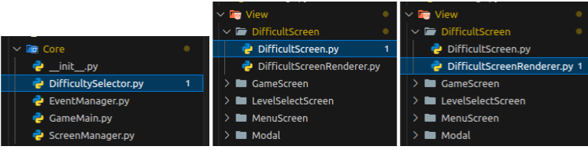
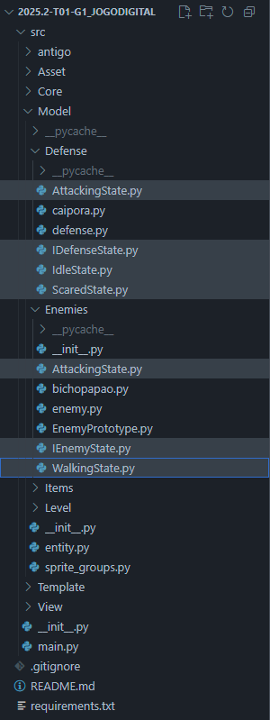

3.3. Módulo Padrões de Projeto GoFs Comportamentais
3.3.1. Introdução
Os Padrões de Projeto Comportamentais fazem parte do conjunto de soluções proposto pela "Gang of Four" (GoF) [1] para lidar com desafios recorrentes na modelagem de sistemas orientados a objetos. Enquanto os padrões Criacionais tratam da instânciação de objetos e os Estruturais da organização entre classes e interfaces, os Comportamentais concentram-se na dinâmica da comunicação entre objetos, promovendo uma colaboração mais eficaz e desacoplada.
Esses padrões são fundamentais para estabelecer fluxos de controle flexíveis, permitindo que algoritmos sejam encapsulados e substituídos sem afetar o restante da aplicação. Ao distribuir responsabilidades de forma estratégica, eles favorecem a manutenção, extensibilidade e reutilização do código [2]. No contexto do desenvolvimento de jogos eletrônicos, por exemplo, sua aplicação permite modularizar comportamentos complexos e dinâmicos, como demonstrado por Figueiredo em sua dissertação [3], tornando os sistemas mais adaptáveis às exigências de interatividade e evolução constante.
Participantes
Tabela 1: Participantes
| Nome | Função | Data | Hora |
|---|---|---|---|
| Caio Duarte | GoF Comportamental - State | 22/10/2025 | 20:00 |
| Danielle Soares | GoF Comportamental - Iterator | 22/10/2025 | 19:30 |
| Enzo Emir | GoF Comportamental - Strategy | 21/10/2025 | 20:00 |
| Laryssa Félix | GoF Comportamental - Strategy | 21/10/2025 | 20:00 |
| Leticia Arisa | GoF Comportamental - Iterator | 22/10/2025 | 19:30 |
| Marcelo Makoto | GoF Comportamental - State | 22/10/2025 | 20:00 |
| Maria Eduarda | GoF Comportamental - Iterator | 22/10/2025 | 19:30 |
| Rafael Welz | GoF Comportamental - Strategy | 21/10/2025 | 20:00 |
| Victor Pontual | GoF Comportamental - State | 20/10/2025 | 11:00 |
Fonte: Equipe do Projeto, 2025.
3.3.2. Metodologia
A pesquisa e o desenvolvimento do estudo dos Padrões de Projeto Comportamentais foram conduzidos seguindo uma abordagem prática e colaborativa, focada na aplicação real dos conceitos em um sistema de software existente.
3.3.2.1. Revisão e Seleção de Padrões
Iniciou-se com a revisão do catálogo de Padrões de Projeto Comportamentais da "Gang of Four" (GoF), conforme introduzido na seção anterior. Foram selecionados os padrões mais relevantes para resolver problemas de interação e comunicação observados no software interno do jogo, que está hospedado em um repositório de código separado.
3.3.2.2. Aplicação e Implementação
Os padrões de projeto selecionados (Strategy, Iterator e State) foram implementados diretamente no código-fonte do software interno do jogo. Esta etapa foi crucial para testar a eficácia dos padrões na redução do acoplamento, melhoria da legibilidade e aumento da flexibilidade do sistema.
3.3.2.3. Modelagem e Documentação UML
Para documentar visualmente a estrutura e a aplicação dos padrões, o software Draw.io foi utilizado para a criação de Diagramas UML (Linguagem de Modelagem Unificada). Esses diagramas (principalmente de Classe e/ou Sequência) serviram para mapear as novas interações e relações entre os objetos resultantes da aplicação dos padrões Comportamentais.
3.3.2.4. Demonstração e Colaboração
Para garantir a transparência do processo e documentar a participação de cada membro, as sessões de desenvolvimento, discussões técnicas e demonstrações de execução do código foram gravadas por meio da plataforma Microsoft Teams. Essas gravações serviram como artefatos de evidência, demonstrando a aplicação prática dos padrões, o fluxo de trabalho colaborativo e a contribuição individual dos membros da equipe na solução dos problemas de design.
3.3.3. Strategy
O padrão Strategy é um dos padrões comportamentais definidos pela Gang of Four (GoF) e tem como objetivo encapsular algoritmos ou comportamentos distintos dentro de classes separadas, permitindo que eles sejam intercambiáveis em tempo de execução. Em vez de implementar diretamente um comportamento em uma classe, o Strategy propõe que esse comportamento seja delegado a um objeto externo, chamado de estratégia. Isso promove a flexibilidade e o desacoplamento, pois novas estratégias podem ser adicionadas ou modificadas sem alterar o código da classe principal. Esse padrão é especialmente útil quando há múltiplas variações de um mesmo processo, como diferentes formas de ordenação, cálculo ou movimentação em jogos, por exemplo. Ao aplicar o Strategy, o sistema se torna mais extensível e testável.
3.3.3.1. Diagrama UML
O GoF Comportamental Strategy foi aplicado ao projeto, nos seguintes códigos:

Fonte: Laryssa Felix, Enzo Emir, Rafael Welz , 2025.
Aplicação do Padrão Strategy (Níveis de Dificuldade)
O trecho de código a seguir, extraído do arquivo (DifficultySelector.py), demonstra
a aplicação do Padrão Strategy através da criação de diferentes estratégias de
dificuldade (EasyStrategy, NormalStrategy e HardStrategy), todas herdando da interface abstrata StrategyDifficulty.
O seletor de dificuldade (DifficultySelector) atua como o contexto, delegando dinamicamente o comportamento conforme o nível selecionado pelo jogador.
import pygame
from abc import ABC, abstractmethod
class StrategyDifficulty(ABC):
@abstractmethod
def obter_multiplicador_vida(self) -> float: ...
@abstractmethod
def obter_multiplicador_ataque(self) -> float: ...
@abstractmethod
def obter_multiplicador_velocidade(self) -> float: ...
def aplicar_regras(self):
print(f"[Core Log] Estratégia de Dificuldade '{self.__class__.__name__}' aplicada.")
class EasyStrategy(StrategyDifficulty):
def obter_multiplicador_vida(self): return 0.7
def obter_multiplicador_ataque(self): return 0.7
def obter_multiplicador_velocidade(self): return 0.9
class NormalStrategy(StrategyDifficulty):
def obter_multiplicador_vida(self): return 1.0
def obter_multiplicador_ataque(self): return 1.0
def obter_multiplicador_velocidade(self): return 1.0
class HardStrategy(StrategyDifficulty):
def obter_multiplicador_vida(self): return 1.5
def obter_multiplicador_ataque(self): return 1.5
def obter_multiplicador_velocidade(self): return 1.2
class DifficultySelector:
_strategy: StrategyDifficulty | None = None
_nivel: str = 'normal'
@classmethod
def inicializar(cls, nivel='normal'):
cls.set_difficulty(nivel)
@classmethod
def set_difficulty(cls, nivel):
mapping = {'easy': EasyStrategy, 'normal': NormalStrategy, 'hard': HardStrategy}
cls._strategy = mapping.get(nivel.lower(), NormalStrategy)()
cls._nivel = nivel
cls._strategy.aplicar_regras()
@classmethod
def obter_multiplicador_vida(cls): return cls._strategy.obter_multiplicador_vida()
@classmethod
def obter_multiplicador_ataque(cls): return cls._strategy.obter_multiplicador_ataque()
@classmethod
def obter_multiplicador_velocidade(cls): return cls._strategy.obter_multiplicador_velocidade()
@classmethod
def get_current_level(cls): return cls._nivel
Interface Visual de Seleção de Dificuldade
Já a interface visual para essa escolha está definida em src/View/DifficultScreen.py.
O arquivo DifficultScreen.py controla a lógica de interação do jogador, e o DifficultScreenRenderer.py cuida da renderização dos elementos gráficos da tela de seleção de dificuldade.
import pygame
from Template.BaseScreen import BaseScreen
from View.DifficultScreen.DifficultScreenRenderer import DifficultScreenRenderer
from View.ViewRenderer import ViewRenderer
from View.InputHandler import InputHandler, InputType
from enum import Enum
class Difficulty(Enum):
EASY = "easy"
MEDIUM = "medium"
HARD = "hard"
class DifficultScreen(BaseScreen):
def __init__(self):
super().__init__()
self.difficulties = {
Difficulty.EASY: {"name": "Fácil", "color": (100, 200, 100), "hover_color": (120, 220, 120)},
Difficulty.MEDIUM: {"name": "Médio", "color": (200, 200, 100), "hover_color": (220, 220, 120)},
Difficulty.HARD: {"name": "Difícil", "color": (200, 100, 100), "hover_color": (220, 120, 120)}
}
self.selected_difficulty = None
self.renderer = DifficultScreenRenderer(self)
def handle_event(self, event):
tipo = InputHandler.classificar_evento(event)
pos = InputHandler.mouse_posicao()
if tipo == InputType.MOUSE and event.type == pygame.MOUSEBUTTONDOWN:
for difficulty, rect in self.difficulty_rects.items():
if rect.collidepoint(pos):
self.selected_difficulty = difficulty
print(f"Dificuldade selecionada: {self.difficulties[difficulty]['name']}")
break
def _iniciar_jogo(self):
from Core.DifficultySelector import DifficultySelector
DifficultySelector.set_difficulty(self.selected_difficulty.value)
# a partir daqui o jogo é iniciado com a estratégia selecionada
Portanto, assim ficou modelado em UML, o padrão Strategy no código do jogo. Clique aqui
Fonte: Laryssa Felix, Enzo Emir, Rafael Welz , 2025.
Estrutura e Responsabilidades
-
StrategyDifficulty
Classe abstrata que define o contrato das estratégias de dificuldade, especificando os métodos necessários para determinar os multiplicadores de vida, ataque e velocidade. -
EasyStrategy, NormalStrategy, HardStrategy
Implementações concretas do contrato deStrategyDifficulty.
Cada uma define seus próprios multiplicadores, influenciando diretamente o equilíbrio do jogo. -
DifficultySelector
Atua como o contexto do padrão.
Ele gerencia a estratégia ativa e fornece métodos centralizados para recuperar os multiplicadores atuais, tornando a lógica de dificuldade independente da camada de visualização. -
DifficultScreen
Classe responsável pela interação do jogador, exibindo opções de dificuldade e chamandoDifficultySelector.set_difficulty()ao iniciar o jogo. -
DifficultScreenRenderer
Responsável pela renderização gráfica da interface, apresentando os cartões de dificuldade com feedback visual (seleção, hover, desabilitado).
Benefícios da Aplicação
- Flexibilidade: novas dificuldades podem ser adicionadas facilmente, bastando criar uma nova classe que herde de
StrategyDifficulty. - Baixo acoplamento: o código de renderização e interação não depende de detalhes de implementação da dificuldade.
- Extensibilidade: permite ajustar regras de vida, dano e velocidade sem alterar a estrutura central do jogo.
- Coesão: cada classe tem uma responsabilidade clara e isolada (render, lógica de input, regras do jogo, etc.).
Esse design evidencia o uso bem estruturado do GoF Comportamental Strategy, ao encapsular variações de comportamento (níveis de dificuldade) em classes independentes e permitir que o jogo altere sua lógica de forma modular, escalável e de fácil manutenção.
3.3.3.2. Opiniões dos Participantes
A elaboração desta etapa foi realizada de forma colaborativa em reunião pelo Discord, não gravada, onde os três membros designados estiveram presentes e participaram ativamente da discussão/elaboração.
O processo da execução do código foi feito no Visual Studio Code e a elaboração da UML foi feita no Draw.io, ferramenta que possibilitou a criação e edição simultânea do diagrama, garantindo integração e alinhamento entre os integrantes.
Ao longo da atividade, cada integrante trouxe ideias e feedbacks que ajudaram a consolidar um resultado alinhado com a visão do grupo como um todo. Esse processo coletivo contribuiu tanto para a consistência do diagrama quanto para o fortalecimento da colaboração na equipe.
Enzo Emir
Pesquisando percebi que uma vantagem do Strategy é sua contribuição para a testabilidade do sistema. Como os comportamentos estão isolados em classes específicas, é possível testar cada estratégia de forma independente, sem depender do contexto completo. Isso favorece a criação de simulações controladas, especialmente útil em sistemas complexos ou com lógica sensível, como IA de jogos, cálculos financeiros ou regras de negócio.
Laryssa Félix
O padrão Strategy é uma solução elegante para cenários em que múltiplos comportamentos precisam ser alternados dinamicamente. Sua principal força está na flexibilidade: ao encapsular algoritmos em classes separadas, ele permite que o sistema evolua sem a necessidade de modificar o código existente. Isso é especialmente útil em jogos digitais, onde diferentes estilos de inimigos, níveis de dificuldade ou modos de ataque podem ser implementados como estratégias distintas.
Rafael Schadt
A implementação do padrão Strategy para as dificuldades do jogo (Easy, Normal, Hard) pareceu desnecessariamente complexa à primeira vista. Questionei a necessidade de múltiplas classes quando uma condicional básica resolvia. No entanto, o valor veio na prática: encapsular cada regra de dificuldade isoladamente garantiu uma estrutura impecável. A adição de novos modos (mesmo que futuramente) se tornou trivial e limpa, confirmando a eficácia e elegância do padrão.
3.3.3.3. Vídeo Demonstrativo
Foi gravado, na plataforma do Microsoft Teams, uma reunião para a modelagem UML do padrão Strategy e a execução do código além da explicação do mesmo. Clique aqui para acessar.
3.3.4. Iterator
O padrão Iterator é um padrão de projeto comportamental que fornece uma maneira de sequencialmente os elementos de um objeto de coleção sem expor sua representação interna (lista, pilha, árvore, etc.)
A intenção principal é permitir que os clientes (código que utiliza a estrutura) percorram a coleção usando uma interface comum, independentemente da estrutura de dados específica que a implementa.
3.3.4.1 Diagrama UML
O GoF Comportamental Interator foi aplicado ao projeto, nos seguintes códigos:
Interface Iterador
from abc import ABC, abstractmethod
from typing import TypeVar, Generic
T = TypeVar('T')
class IIterator(ABC, Generic[T]):
"""
Declara as operações necessárias para percorrer uma coleção.
"""
@abstractmethod
def getNext(self) -> T:
"""
Pega o próximo elemento da iteração.
"""
pass
@abstractmethod
def hasMore(self) -> bool:
"""
Verifica se ainda há elementos para percorrer.
"""
pass
@abstractmethod
def getPosition(self) -> int:
"""
Retorna o índice ou posição atual do iterador.
"""
pass
@abstractmethod
def restart(self):
"""
Reinicia o iterador, voltando para a primeira posição.
"""
pass
class IIterableCollection(ABC, Generic[T]):
"""
Declara um ou mais métodos para obter iteradores.
"""
@abstractmethod
def createIterator(self) -> IIterator[T]:
"""
Retorna uma nova instância de um iterador compatível.
"""
pass
Iteradores Concretos
import pygame
from typing import TypeVar
from .interfaces import IIterator, IIterableCollection
# Define que 'T' deve ser sempre um tipo de Sprite
T = TypeVar('T', bound=pygame.sprite.Sprite)
class SpriteGroupIterator(IIterator[T]):
def __init__(self, group: pygame.sprite.Group):
# No exato momento da criação do iterador é tirado um "snapshot"
# (Uma cópia da lista que iterador irá percorrer)
self._snapshot: list[T] = group.sprites()
self._count: int = len(self._snapshot)
self._position: int = 0
def getNext(self) -> T:
# Pega o próximo elemento da iteração se houver
if self.hasMore():
sprite = self._snapshot[self._position]
self._position += 1
return sprite
else:
raise StopIteration("Não há mais elementos na iteração.")
def hasMore(self) -> bool:
# Verifica se há mais elementos para iterar
return self._position < self._count
def getPosition(self) -> int:
# Retorna a posição atual do iterador
return self._position
def restart(self):
# Reinicia o iterador, voltando para a primeira posição do snapshot
self._position = 0
class IterableSpriteGroup(IIterableCollection[T]):
# Essa classe age como um adaptador para pygame.sprite.Group
def __init__(self, group: pygame.sprite.Group):
self._group = group
def createIterator(self) -> IIterator[T]:
# Cria um novo iterador, que vai tirar um novo snapshot
return SpriteGroupIterator[T](self._group)
def get_raw_group(self) -> pygame.sprite.Group:
# Método auxiliar para acessar o grupo original, se necessário
return self._group
Cliente
import pygame
from Model.interfaces import IIterableCollection
from Model.Defense.caipora import Caipora
from Model.Enemies.enemy import Enemy
from Model.Items.arrow import Arrow
class PhysicsEngine:
@classmethod
def processar_colisoes(
cls,
projeteis_col: IIterableCollection[Arrow],
inimigos_col: IIterableCollection[Enemy],
caiporas_col: IIterableCollection[Caipora]
):
# Colisão de projéteis com inimigos
# Pega o iterador de projéteis e cria um snapshot da lista de projéteis
iter_projeteis = projeteis_col.createIterator()
# Percorre o snapshot de projéteis
while iter_projeteis.hasMore():
projetil = iter_projeteis.getNext()
# Para cada projétil é criado um novo iterador de inimigos
iter_inimigos = inimigos_col.createIterator()
#Percorre o snapshot de inimigos
while iter_inimigos.hasMore():
inimigo = iter_inimigos.getNext()
# Checa colisão entre o projétil e o inimigo
if pygame.sprite.collide_rect(projetil, inimigo):
# Usa o dano do projétil para reduzir a vida do inimigo
inimigo.health -= projetil.damage
if inimigo.health <= 0:
inimigo.kill() # Remove do grupo original
projetil.kill() # Remove o projétil do grupo original
break
# Colisão de inimigos com defesas
# Cria uma nova iteração de inimigos
iter_inimigos_ataque = inimigos_col.createIterator()
# Percorre o snapshot de inimigos
while iter_inimigos_ataque.hasMore():
inimigo = iter_inimigos_ataque.getNext()
# Para cada inimigo, cria um novo iterador de Caiporas
iter_caiporas = caiporas_col.createIterator()
defesas_na_linha = [] # Lista temporária
# Percorre o snapshot de Caiporas
while iter_caiporas.hasMore():
defesa = iter_caiporas.getNext()
if defesa.grid_y == inimigo.grid_y:
defesas_na_linha.append(defesa)
# Lógica de ataque
atacou_alguem = False
for defesa in defesas_na_linha:
if pygame.sprite.collide_rect(inimigo, defesa):
inimigo.is_attacking = True
atacou_alguem = True
if hasattr(inimigo, 'attack'):
inimigo.attack(defesa)
else:
defesa.health -= inimigo.damage * 0.1
if defesa.health <= 0:
defesa.kill()
break # Inimigo ataca apenas uma defesa por vez
if not atacou_alguem:
inimigo.is_attacking = False
Portanto, assim ficou o modelado em UML, o padrão Iterator no código do jogo. Clique aqui para acessar:
O diagrama acima ilustra a arquitetura de classes responsável pelo processamento de colisões no jogo, evidenciando como o Padrão de Projeto Iterador foi aplicado para permitir que a lógica de física percorra diferentes coleções de entidades (como inimigos, projéteis e defesas) de maneira uniforme.
No centro do padrão, encontram-se as duas interfaces principais:
-
IterableCollection (Agregado): Define a interface para as coleções que podem ser percorridas. Sua responsabilidade principal é declarar o método de fábrica createIterator(), que retorna um objeto Iterador.
-
Iterator: Define a interface comum para percorrer os elementos da coleção, abstraindo a estrutura interna. Ela inclui métodos essenciais como getNext() (para obter o próximo item) e hasMore() (para verificar se a iteração terminou).
Abaixo, estão as implementações concretas dessas interfaces:
-
IterableSpriteGroup (Agregado Concreto): É a classe que representa a coleção de sprites em si (provavelmente encapsulando um pygame.sprite.Group). Ela implementa IterableCollection e sabe como criar seu iterador específico.
-
SpriteGroupIterator (Iterador Concreto): É a classe que implementa a interface Iterator, contendo a lógica específica para percorrer os elementos dentro de um IterableSpriteGroup.
Finalmente, a classe PhysicsEngine atua como o Cliente do padrão. Ela depende apenas das interfaces (IterableCollection e Iterator), e não das implementações concretas.
Como visto no código, o método processar_colisoes recebe coleções (como projeteis_col, inimigos_col) que obedecem à interface IIterableCollection. Dentro do método, em vez de acessar diretamente a estrutura de dados dessas coleções, o PhysicsEngine solicita um iterador através de projeteis_col.createIterator().
Em seguida, ele usa os métodos da interface do iterador (while iter_projeteis.hasMore(): e projetil = iter_projeteis.getNext()) para processar cada elemento.
3.3.4.3. Opniões dos Participantes
Danielle Soares
A minha experiência foi que eu achei um pouco difícil entender o Iterator dentro do nosso projeto. Geralmente, os exemplos que vemos relacionados a jogos estão sempre ligados a níveis, um nível leva a outro, que leva a outro, e assim por diante. É necessário ter um iterator que aponte para o próximo nível, e depois para o próximo, e para o próximo. Como a gente ainda não tem o código totalmente implementado, não conseguíamos visualizar essa lógica de níveis claramente. Tivemos que buscar essa lógica do iterator dentro do que já estava implementado, e isso foi um pouco difícil de identificar. Mas depois que entendemos o conceito, tudo ficou mais tranquilo. É um conceito simples, mas o nome e toda a ideia por trás dele, quando a gente vê pela primeira vez, podem assustar um pouco.
Leticia Arisa
Sobre o Iterator, no começo foi um pouco difícil para mim entender como o código funcionava, mas depois comecei a compreender melhor. Quando parei para estudar com calma, percebi que não era tão difícil assim.
Maria Eduarda
Basicamente, a minha experiência foi um pouco complicada, principalmente por eu ainda ter pouca base em orientação a objetos. Então, ligar esse conhecimento com o padrão de projeto comportamental e tentar entender como ele funcionaria dentro do nosso projeto foi bastante difícil para mim. Felizmente, eu tive ajuda das minhas colegas de trabalho, o que tornou o processo um pouco mais tranquilo. Aos poucos, fui conseguindo entender e conectar tudo. Quando a gente vai conversando e trocando ideias, o entendimento flui melhor e conseguimos construir juntos. No fim, apesar de ter sido uma experiência difícil no começo, depois da nossa apresentação eu consegui compreender bem o conceito, e fiquei satisfeita com o resultado.
3.3.4.4. Vídeo Demonstrativo
Foi gravado, na plataforma do Microsoft Teams, uma reunião para a modelagem UML do padrão Iterator e a explicação do mesmo. Clique aqui para acessar.
3.3.5. State
O padrão State é um padrão de projeto comportamental que permite a um objeto alterar seu comportamento quando seu estado interno muda. O objeto parecerá mudar de classe [4].
A intenção principal é permitir que um objeto altere seu comportamento sem mudar sua classe, encapsulando os comportamentos associados a estados específicos em objetos separados.
3.3.5.1. Diagrama UML
O GoF Comportamental State foi aplicado ao projeto, no seguinte código:

Aplicação do Padrão State (Gerenciamento de Comportamento)
O trecho de código a seguir, extraído do arquivo AttackingState.py, demonstra a implementação do Padrão State.
A classe AttackingState encapsula o comportamento de uma unidade de defesa quando está no estado de ataque. Ela gerencia a lógica de animação, a transição para outros estados (como IdleState) e a execução de ações específicas, como atirar().
import pygame
class AttackingState:
def enter(self, defense) -> None:
defense.atacando = True
defense.animation_timer = 0
print(f"[{defense.__class__.__name__}] Entrando em AttackingState")
def exit(self, defense) -> None:
defense.atacando = False
defense.frame_index = 0
if hasattr(defense, 'frames') and defense.frames:
defense.image = defense.frames[defense.frame_index]
def update(self, defense) -> None:
from Model.sprite_groups import sprite_manager
inimigos_grupo = sprite_manager.inimigos
alvo_na_linha = any(
e for e in inimigos_grupo
if e.grid_y == defense.grid_y and e.rect.right > defense.rect.right
)
if not alvo_na_linha:
from Model.Defense.IdleState import IdleState
defense.set_state(IdleState())
return
defense.animation_timer += 1
if defense.animation_timer >= defense.frame_duration:
if defense.frame_index == defense.FRAME_DE_TIRO:
defense.atirar()
defense.frame_index = (defense.frame_index + 1) % len(defense.frames)
defense.image = defense.frames[defense.frame_index]
defense.animation_timer = 0
Portanto, assim ficou modelado em UML, o padrão State no código do jogo. Clique aqui para acessar:
{kind=link}
O diagrama acima ilustra a aplicação do Padrão de Projeto State para gerenciar o comportamento dinâmico das entidades de defesa no jogo, como a Caipora. A arquitetura desacopla o comportamento de uma entidade de sua classe principal, permitindo que ela mude de comportamento em tempo de execução.
Os principais componentes do diagrama são:
-
State(Interface): No topo, a interfaceStatedefine o contrato que todos os estados concretos devem seguir. Ela declara os métodos essenciais que governam o ciclo de vida de um estado:enter(entity): Executado quando a entidade entra no estado.exit(entity): Executado quando a entidade sai do estado, para limpeza.update(entity): Chamado a cada quadro do jogo para executar a lógica do estado.
-
IdleStateeAttackingState(Estados Concretos): Estas classes implementam a interfaceStatee encapsulam os comportamentos específicos.IdleState: Representa o estado ocioso, onde a defesa pode estar aguardando inimigos. Sua lógica deupdateverifica as condições para transicionar para oAttackingState(por exemplo, se um inimigo entra no alcance).AttackingState: Contém a lógica para quando a defesa está ativamente atacando. Seuupdategerencia a animação de ataque e verifica se deve retornar aoIdleState(por exemplo, se não há mais inimigos na linha).
-
Defesa(Contexto): A classeDefesaatua como o Contexto. Ela mantém uma referência ao seu estado atual (um objeto que implementaState) e delega a execução do comportamento para esse objeto.- Possui um método
set_state(newState)que permite a si mesma ou aos objetos de estado alterar seu estado atual, executando os métodosexit()do estado antigo eenter()do novo. - O método
update()daDefesasimplesmente chama oupdate()de seu estado atual, garantindo que o comportamento correto seja executado.
- Possui um método
-
Caipora: É uma implementação concreta daDefesa, representando uma unidade específica do jogo que utiliza essa máquina de estados para controlar seu comportamento.
Essa estrutura permite que o comportamento da Caipora mude dinamicamente entre "ocioso" e "atacando" sem usar condicionais complexas dentro da classe Caipora, tornando o código mais limpo, organizado e fácil de estender com novos estados.
3.3.5.2. Opiniões dos Participantes
A elaboração desta etapa foi realizada de forma colaborativa em reunião pelo Discord, não gravada, onde os três membros designados estiveram presentes e participaram ativamente da discussão/elaboração. O processo da execução do código foi feito no Visual Studio Code e a elaboração da UML foi feita no Draw.io, ferramenta que possibilitou a criação e edição simultânea do diagrama, garantindo integração e alinhamento entre os integrantes.
Ao longo da atividade, cada integrante trouxe ideias e feedbacks que ajudaram a consolidar um resultado alinhado com a visão do grupo como um todo. Esse processo coletivo contribuiu tanto para a consistência do diagrama quanto para o fortalecimento da colaboração na equipe.
Caio Duarte
Gostei muito do padrão, achei algo bem diferente e fora da caixinha a lógica dele de controlar estados, creio que ele encaixou muito bem no nosso trabalho ao controlar os estados das entidades.
Marcelo Makoto
Implementar o padrão de States foi bem mais intuitivo do que eu imaginei no começo. Ele também se torna crucial no nosso projeto, visto que a quantidade de entidades aumentará cada vez mais com a evolução do jogo e esse padrão ajudará na organização do projeto e na implementação de novas entidades.
Victor Pontual
Implementar o State Pattern foi revelador — antes eu usava flags booleanas e condicionais espalhados para gerenciar comportamentos dos personagens, o que funcionava mas ficava confuso. Ao aprender o padrão formal, percebi que já fazia algo parecido de forma "casual", só que agora com estrutura adequada: cada comportamento virou uma entidade independente, transições ficaram explícitas, e adicionar novos estados se tornou trivial sem mexer no código existente. Foi daqueles momentos onde você aprende a nomenclatura oficial de algo que já fazia intuitivamente, transformando um "sistema improvisado" em arquitetura elegante e escalável.
3.3.5.3. Vídeo Demonstrativo
Foi gravada, na plataforma do Microsoft Teams, uma reunião para a modelagem UML do padrão State e a execução do código além da explicação do mesmo. Clique aqui para acessar.
3.3.6 Referências Bibliográficas
1. GAMMA, Erich et al. Padrões de Projeto: Soluções Reutilizáveis de Software Orientado a Objetos. Tradução de C. F. Lucena e F. S. C. da Silva. Porto Alegre: Bookman, 2007. (Título original: Design Patterns: Elements of Reusable Object-Oriented Software).
2. SERRANO, Milene. Aula – GOFs Comportamentais. Arquitetura e Desenho de Software. Universidade de Brasília – UnB Gama, [s.d.]. Material de aula (apresentação de slides).
3. FIGUEIREDO, Roberto Tenório. Padrões de Projeto GOF aplicados ao Desenvolvimento de Jogos Eletrônicos. 2014. 123 f. Dissertação (Mestrado em Ciência da Computação) – Universidade Federal de Pernambuco, Centro de Informática, Recife, 2014.
4. UNITY CODER CORNER. Unity: The State Pattern. Medium, 2 de ago. de 2021. Disponível em: https://medium.com/unity-coder-corner/unity-the-state-pattern-ee067fe8bf1b. Acesso em: 24 de out. de 2025.
Histórico de Versões 📅
| Versão | Data | Descrição | Autor(es) | Revisor(es) |
|---|---|---|---|---|
0.1 |
24/10/2025 | Adicionando Documentação GoF Comportamental | Laryssa Felix | Caio Duarte |
0.2 |
24/10/2025 | Ajustes Documentação GoF Comportamental | Laryssa Felix, Enzo Emir, Rafael Welz | Caio Duarte |
0.3 |
24/10/2025 | Adiciocionando Documentação Iterator | Danielle Soares, Leticia Arisa, Maria Eduarda Andrade | Marcelo Makoto |
0.4 |
24/10/2025 | Adicionando Documentação GoF State | Marcelo Makoto | Maria Eduarda Andrade |